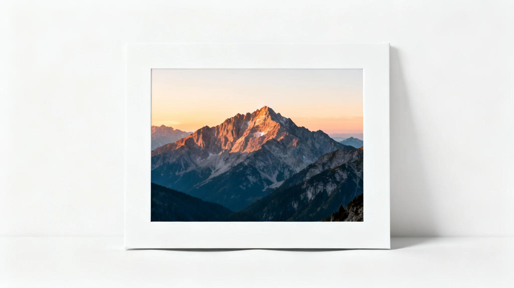

A simple border can make a photograph look more organised, while extra padding can give it room to breathe. Whether you are preparing pictures for social media, creating product images for an online store, or adding visuals to a website, these small adjustments can make a noticeable difference.
You do not always need professional design software to frame a picture. An online image border tool can help you add a visible outline, adjust its thickness, and create extra space around your image.
In this guide, you will learn how to add a border to an image online, understand the difference between borders and padding, choose suitable colours, and prepare images for different uses.
What Is an Image Border?
An image border is a visible outline placed around the edges of a picture. It creates a clear boundary between the image and the surrounding area.
For example, a thin white border can give a photograph a minimal appearance, while a dark border can create stronger contrast. A coloured border can also help an image match a brand's visual identity.
Borders are useful when you want to:
- Give a photograph a framed appearance.
- Separate an image from a busy background.
- Create a consistent look across multiple pictures.
- Make product images easier to distinguish.
- Add a finishing touch to social media graphics.
- Prepare images for presentations and blog layouts.
The right border should support the image rather than compete with it.
What Is Image Padding?
Image padding is the extra space added around the original image content. Unlike a visible border, padding creates an additional area around the picture.
Imagine a square photograph placed in the centre of a larger white canvas. The white area surrounding the photograph is padding.
Padding can help when:
- A picture feels too close to the edge.
- You want more white space around a photograph.
- A product image needs room inside a catalogue layout.
- You want several images to have consistent spacing.
- You need to place an image inside a larger design.
Padding is particularly useful in minimalist layouts because it gives the main subject more visual breathing room.
Border vs Padding: What Is the Difference?
Borders and padding may look similar at first, but they serve different design purposes.
| Feature | Image border | Image padding |
|---|---|---|
| Main purpose | Creates a visible outline | Adds surrounding space |
| Appearance | Line or frame around an image | Empty area around the image |
| Colour | Border colour | Padding background colour |
| Thickness | Controls outline width | Controls surrounding space |
| Best use | Framing and separation | Spacing and layout |
Example: Suppose you have a product photograph with a white background.
- Add a black border if you want a visible outline.
- Add white padding if you want more space around the product.
- Use both if you want a framed appearance with extra breathing room.
How to Add a Border to an Image Online
You can use the QuickToolsPK Borders & Padding tool to add a border or extra space around an image.
Follow these steps:
Step 1: Open the image border tool
Visit the QuickToolsPK Image Borders & Padding page.
Step 2: Upload your picture
Drag and drop your image into the upload area, or browse your device to select a file. The current tool page lists support for JPG, PNG and WEBP images, with a maximum file size of 20 MB.
Step 3: Adjust the border thickness
Find the Border Settings section and adjust the available thickness controls. A subtle outline is usually a good starting point. Increase the thickness only when the image needs a stronger frame.
Step 4: Choose a border colour
Select a colour that complements the photograph and its intended use. For example:
- White for a minimal appearance.
- Black for stronger contrast.
- Grey for a subtle outline.
- A brand colour for promotional graphics.
Step 5: Add padding if needed
Use the Padding Settings to add extra space around the image. Adjust the padding size and background colour to suit your layout.
Step 6: Review and download
Check the preview to make sure the border is balanced and the original picture remains properly positioned. When satisfied, select Download Image to save your edited result.
Try the Online Image Border Tool
Add a frame or create extra space around your picture without needing a complex design application.
Which Border Colour Should You Choose?
Colour can change the overall appearance of a framed image. Instead of choosing a colour randomly, consider the image itself and where you plan to use it.
White border
A white border creates a clean, simple appearance. It works well with bright photographs, minimalist designs and social media layouts. It can also help separate an image from a darker surrounding background.
Black border
Black creates a strong visual outline. It can work well with monochrome photographs, editorial designs and pictures that need more contrast. However, thick black borders may make smaller pictures feel crowded.
Grey border
Grey offers a softer alternative to black. It is useful when you want to define an image without making the border the main visual element.
Brand-coloured border
A brand colour can help maintain consistency across product images, promotional graphics and social media posts. Use a colour from your existing visual identity rather than introducing too many unrelated colours.
How Much Border Thickness Should You Use?
There is no single border thickness that works for every photograph. The right amount depends on the image dimensions, subject and design.
Consider these general design starting points:
| Image size | Example border thickness |
|---|---|
| 400 × 400 px | 4–8 px |
| 800 × 800 px | 8–16 px |
| 1200 × 1200 px | 12–24 px |
| 1600 × 1600 px | 16–32 px |
These are illustrative design suggestions, not platform requirements or fixed rules.
A thin border often works better for small images. Larger photographs can support a more noticeable frame. Always preview the final result at the size where people will actually see it.
How to Add White Space Around an Image Without Cropping It
Sometimes an image does not need a visible border. It simply needs more room around the subject. This is where padding becomes useful.
For example, imagine a square product photograph that looks too crowded. Instead of cropping the original image, you can add padding around it to create a larger canvas.
A practical approach is:
- Upload the original image.
- Open the padding controls.
- Increase the padding size gradually.
- Choose a suitable background colour.
- Review the position of the original picture.
- Check the final canvas dimensions.
- Download the edited image.
Remember that padding can increase the overall width and height of the exported image. If the original is 800 × 800 pixels, adding space around it may produce a larger canvas. The exact output depends on the padding settings and the tool's implementation.
Why Add Borders and Padding to Product Images?
Product images are often displayed in grids, category pages, catalogues and online shopping listings. When every photograph has different spacing, the collection can look inconsistent. Borders and padding can help establish a more organised visual presentation.
Create consistent product listings
If you sell multiple products, consider using similar spacing and framing across related photographs. For example, a collection of skincare products can look more consistent when every image uses a similar background and surrounding space.
Make products easier to distinguish
A subtle border can separate a light-coloured product from a white or pale website background.
Improve catalogue layouts
Padding can help product pictures fit into cards or catalogue sections without making the content feel crowded.
Using Image Borders for Social Media Posts
A border can also be useful when preparing photographs for social media. You may want to create a consistent style for:
- Instagram photo collections.
- Facebook promotional graphics.
- Pinterest image designs.
- Personal photography portfolios.
- Business announcements.
- Before-and-after comparisons.
Padding is particularly helpful when a photograph needs to fit into a larger layout without cropping important details. Before publishing, check the platform's current image dimensions and preview your design on a mobile screen.
Does Adding a Border Change Image Dimensions?
It depends on the editing method. A border may be drawn around an image, or it may expand the outer canvas. Padding generally adds surrounding space, which can increase the total output dimensions.
Consider this example:
| Original image | Added space on each side | Possible new canvas |
|---|---|---|
| 800 × 800 px | 20 px | 840 × 840 px |
| 1200 × 800 px | 30 px | 1260 × 860 px |
| 1000 × 1500 px | 25 px | 1050 × 1550 px |
These examples assume the specified amount is added to each side. Actual output should be checked in the downloaded file. If you need exact pixel dimensions after adding padding, use an image resizer to check or adjust the final size.
Common Mistakes to Avoid When Adding Image Borders
A border should improve the composition, not distract from it. Watch out for these common mistakes:
1. Using a border that is too thick
A thick frame can take attention away from the photograph. Start with a subtle outline and increase it only when needed.
2. Choosing a colour that clashes with the image
A bright border may compete with the main subject. Select a colour that complements the picture.
3. Adding too much padding
Excessive empty space can make the subject appear too small. Use enough space to improve balance without weakening the composition.
4. Ignoring the final dimensions
Adding padding may increase the canvas size. Check the exported dimensions before using the picture in a fixed-size layout.
5. Using inconsistent borders across a collection
If you are preparing a set of product photographs, different border widths can make the catalogue look uneven. Use consistent settings where appropriate.
6. Forgetting to check the exported image
Do not rely only on the preview. Open the downloaded image and check its edges, dimensions, colours and overall appearance.
Border, Padding or Image Resizing: Which One Do You Need?
These editing options solve different problems.
| Your requirement | Best option |
|---|---|
| Add an outline around a photograph | Image border |
| Create extra space around the picture | Image padding |
| Change the width and height | Image resizer |
| Reduce the file size | Image compressor |
| Change JPG, PNG or WEBP format | Image format converter |
If you need to make more than one adjustment, you can use the relevant tools in sequence. For example, add padding first, check the dimensions, resize if necessary, and then compress the final image if the file is too large.
Prepare Your Images with QuickToolsPK
You do not need a complicated editing workflow for every image adjustment. A simple border or a little extra padding can help make photographs look more balanced and consistent.
The QuickToolsPK Image Borders & Padding tool provides controls for border thickness, border colour, padding size and background colour. You can upload a supported image, make adjustments, review the result and download your edited picture.
Whether you are preparing a product catalogue, a social media graphic or an image for a website, start with subtle adjustments and check the final dimensions before publishing.